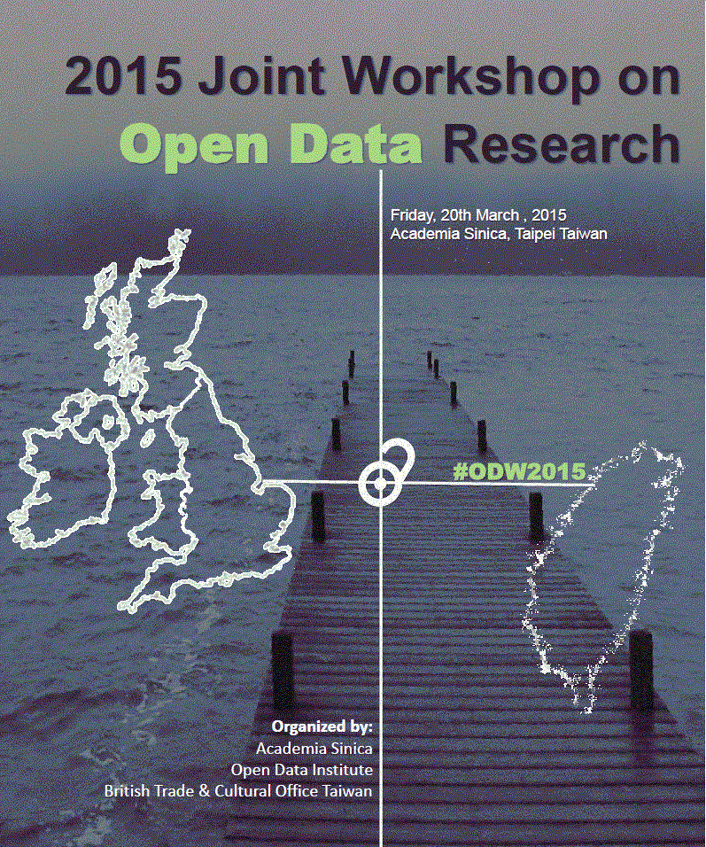

2015-02-24
2015 Joint Workshop on Open Data Research
The 2015 Joint Workshop on Open Data Research --- jointly organized by Academia Sinica (Taiwan), Open Data Institute (UK), and the British Trade and Culture Office in Taiwan --- will be held on March 20, 2015 at Academia Sinica in Taipei. The goal of the workshop is to promote the exchange of ideas, practices, and perspectives about open data, in particluar in the context of research and development.
Speakers and panelists from UK and Taiwan will present and discusss case studies, best practices, and research projects. All are invited to take part in the workshop. It is hoped that by engaging the various research and technical communities in Taiwan, UK, and worldwide, this event will help enable further open data research opportunities and connections.
You are much encouraged to participate in the workshop if you are or will be working on datasets released by others to the public for reuse. If you have been or are considering releasing your datasets to the public, you have more the reason to participate. Developers, researchers, students, and citizens, you are all welcomed. Let us all learn from one another to help shape open data practices.
The planning of this event has been helped by Open Source Software Foundry and Creative Commons Taiwan , two projects hosted at the Research Center for Information Technology Innovation, Academia Sinica. More details about the 2015 Joint Workshop on Open Data Research can be found at the following:
◎ Date: 2015/03/20 （Fri.) 9:30 am
◎ Venue: http://odw.tw/en/location
◎ Programme: http://odw.tw/en/programme
◎ Registration webpage: http://odw.kktix.cc/events/jwodr2015
---
「2015 開放資料研究聯合工作坊」(2015 Joint Workshop on Open Data Research) 近期將於 3 月 20 日在台北中央研究院舉行。這項活動由中央研究院、開放資料協會 (Open Data Institute, ODI) 、以及英國貿易文化辦事處 (British Trade and Culture Office) 所共同協力籌辦。工作坊的舉辦目的在於促進台灣、英國、以及在地與全球社群在開放資料研究領域的資訊分享。
此次活動能夠讓與會講者，就開放資料相關的想法、實踐，及觀點進行交流，特別就研究與發展這個脈絡來著墨。來自英國與台灣的講者和與談人，將就開放 資料的案例研究、最佳實踐，以及研究專案內容這些主題進行呈現和討論。所有聽眾都非常歡迎能夠就這些討論進行參與。預期的成果是，藉由台灣、英國，及全球 各方研究與技術社群的參與，本次活動能開啟開放資料研究未來的發展機會與人際網絡！
如果您本身對採用他人公眾釋出，容許再次使用的資料、資料集進行實作已有心得，或有這樣的打算，非常歡迎您能夠來參與這次活動。而若是您曾將手上持 有的資料、資料集提供予公眾，或有這樣的想法，則您更是有充份的理由來參與此次活動。開發者、研究者、學生，以及對開放資料有興趣的公民參與者，都非常歡 迎能夠撥冗來共襄盛舉！透過這樣的活動，參與者得以互相學習，以形塑未來開放資料實作、實踐的發展。
此次活動籌劃得力於中央研究院資訊科技創新研究中心下，自由軟體鑄造場 與 台灣創用CC計畫 這兩個專案計畫。更多活動相關細節，請參照以下的資訊與連結：（本工作坊以英語為主要進行語言）
◎ 日期: 2015/03/20 （五）9:30 am
◎ 會場: http://odw.tw/tw/location
◎ 議程: http://odw.tw/en/programme
◎ 報名頁面: http://odw.kktix.cc/events/jwodr2015
合辦單位：


